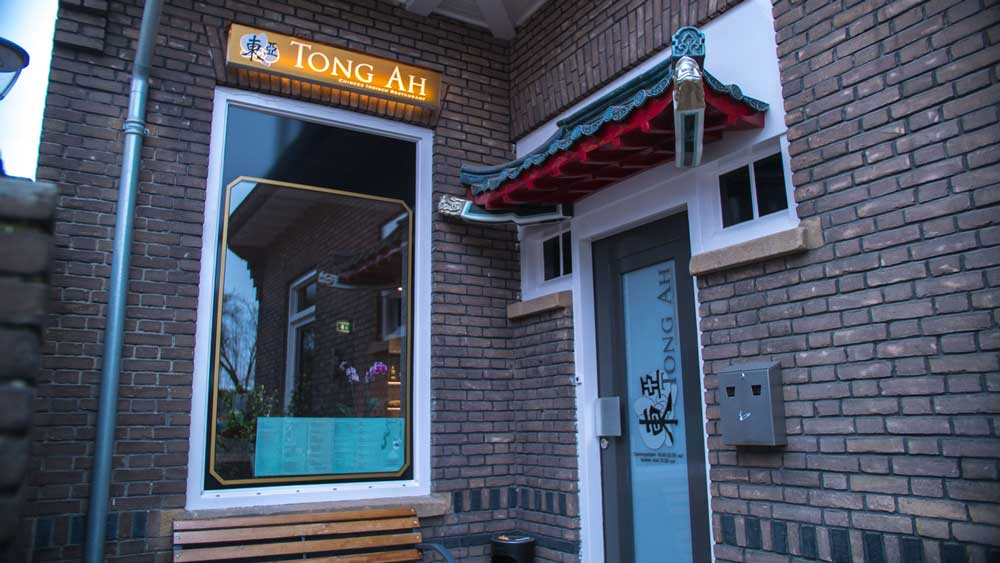
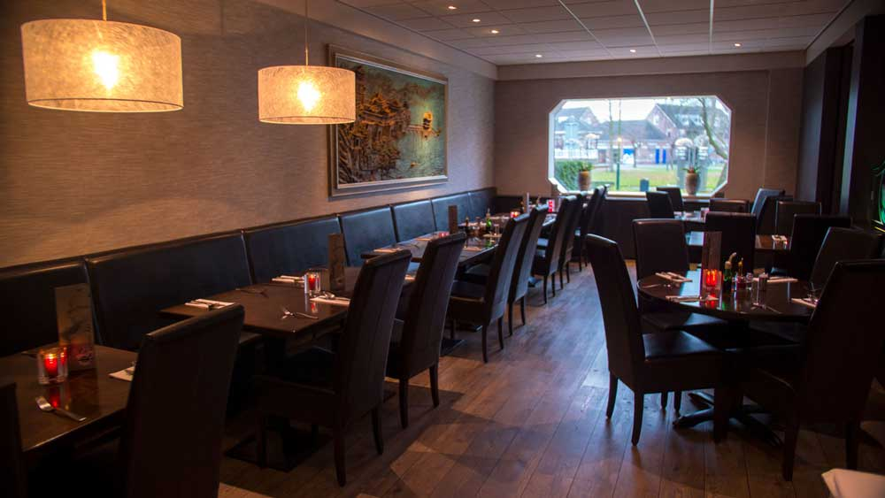
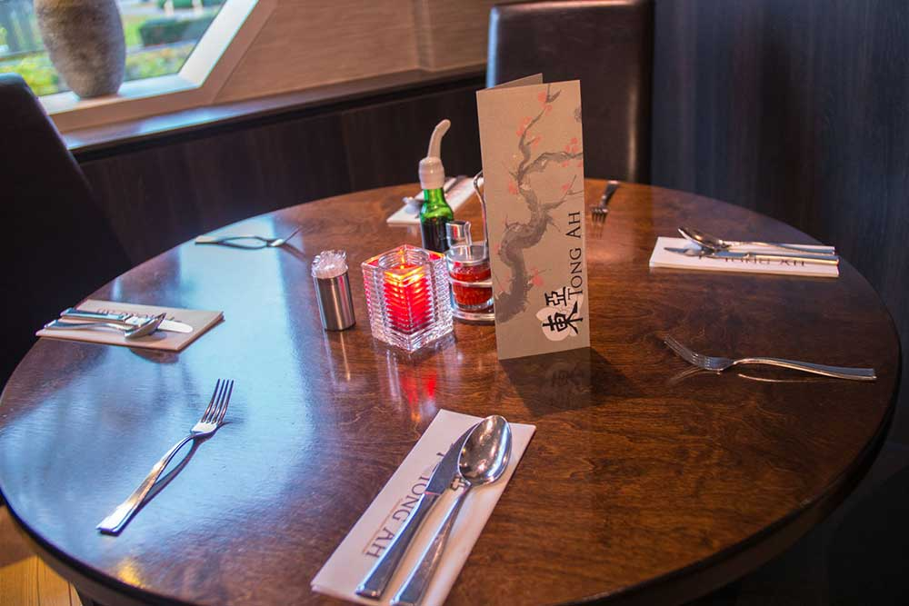

Klassieke Chinese rijsttafel
€ 31,50 p.p.
- Tomatensoep
- Babi Pangang
- Foe Yong Hai
- Kou Lou Yuk
- Tjap Tjoy
- Saté
- Koffie of Dame Blanche
Uit de keuken van Tong Ah
Tong Ah, Park 45 Nuenen
Eerst het restaurant van Tuihu's ouders, sinds 2004 van Tuihu en Shuli. Kom aan tafel met uitzicht op het park en het klooster, haal af of laat het thuis bezorgen.
Liever bellen? 040 283 3774
Elke dag open16.00 tot 21.30 uur, keuken sluit om 21.30
Zondagrestaurant open vanaf 18.30 uur voor diner
Bezorgendagelijks van 16.30 tot 20.45 uur

Bij Chinees Indische restaurants wordt van oudsher vaak besteld om thuis te eten. U bestelt bij ons online om zelf op te halen of om te laten bezorgen, via Thuisbezorgd of via ons eigen bestelsysteem. Via de laatste spaart u voor korting en betaalt u geen plastictoeslag.
Ook te bestellen via de Tong Ah app. WhatsApp: 06 39 73 98 50.
Van 16.30 tot 20.45 uur. Bezorgkosten € 3,75, minimale bestelling € 20,00.
5677, 5694, 5706, 5708, 5731 en 5737. Minimale bestelling € 35,00, exclusief € 6,50 bezorgkosten.
Om binnen een uur te kunnen bezorgen beperken we ons op zondag tot de postcodes 5671, 5672, 5673, 5674, 5706, 5708, 5731, 5737 en 5694.
Bezorging buiten deze gebieden is mogelijk vanaf € 75. Mail ons via info@tongah-nuenen.nl.
Bestel op nummer. Alle hoofdgerechten zijn inclusief nasi, bami of pandanrijst; ook half nasi, half bami of kroepoek. Mihoen in plaats hiervan € 2,50 toeslag, grote portie € 1,50 extra.
1 persoon, 2 keuzes € 14,50 2 personen, 3 keuzes € 27,50
Met kroepoek en nasi, bami of pandanrijst. * € 1,00 toeslag, ** € 2,50 toeslag. Alle gerechten uit het keuzemenu zijn los te bestellen vanaf € 7,50.
€ 27,50
€ 54,50
€ 81,50
€ 27,50
€ 57,50
€ 87,50
€ 36,50
€ 43,50
Voor wijzigingen aan de samenstelling van rijsttafels wordt een toeslag berekend. Indische rijsttafels voor 2 en 4 personen staan onder nr. 179 en 180.
Voor meer kleine porties zie keuzemenu
Zie ook nr 48, 49, 52, 53, 178
Alle hoofdgerechten zijn inclusief Nasi, Bami of Pandanrijst.
Ook mogelijk half Nasi / half Bami of kroepoek.
In plaats hiervan Mihoen € 2,50 toeslag.
Grote portie Nasi, Bami, rijst of Mihoen € 1,50 extra.
Verras uw gasten, familie, collega's of ieder ander gezelschap met gerechten uit de Chinees Indische keuken, in de omgeving van Nuenen.
€ 16 p.p. vanaf 16 personen, met bezorging en ophalen na afloop
Extra: kroepoek, mini loempia's, sambal.


Mijn naam is Tuihu en samen met mijn vrouw Shuli zijn wij sinds 2004 eigenaar van Tong Ah. Voorheen was het restaurant van mijn ouders, die het in 1973 zijn begonnen. Mijn ouders komen uit de provincie Zhejiang in China. Ze hadden familie die de eerste Chinees Indische restaurants waren begonnen. Daar leerden ze het vak, waarna ze een eigen restaurant konden beginnen.
De gerechten waren gebaseerd op de Indonesische keuken, die al enigszins bekend was in Nederland door de mensen die terugkwamen uit Nederlands-Indië. De Chinezen gaven daar een eigen draai aan, en zo ontstond de Chinees Indische keuken. Veel mensen hebben er warme herinneringen aan: het was de eerste buitenlandse keuken die je samen met de familie thuis kon eten.
We zitten in het centrum van Nuenen, met uitzicht op het park en het klooster.
Tong Ah
Park 45
5671 GB Nuenen
040 283 3774
info@tongah-nuenen.nl
WhatsApp 06 39 73 98 50
| Maandag t/m zaterdag | 16.00 – 21.30 |
|---|---|
| Zondag | 16.00 – 21.30 restaurant vanaf 18.30 |
| Bezorgen | 16.30 – 20.45 |